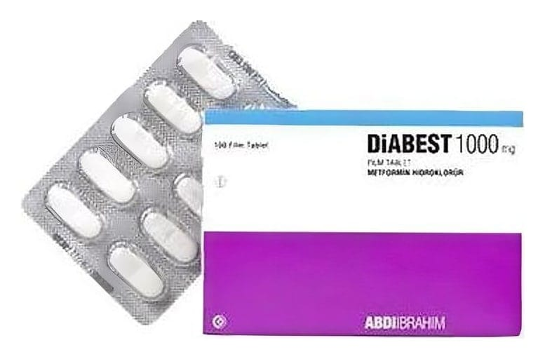

Diabest 1000 mg Film Tablet, 100 Adet

Ne için kullanılır
KT · Bölüm 1 DİABEST oral antidiyabetikler (biguanidler) olarak adlandırılan bir ilaç grubuna dahildir. Bu tür ilaçlar şeker hastalığını (diyabet) tedavi etmede kullanılırlar. Her bir film kaplı tablet 1000 mg metformin hidroklorür içeren 100 tabletlik blister ambalajlarda kullanıma sunulmuştur. DİABEST, bir yüzündeki çentik daha derin olmak üzere, her iki yüzü çentikli, beyaz renkli, oblong, film kaplı tabletlerdir. Tabletler iki eşit parçaya bölünebilir. İnsülin pankreas tarafından üretilen ve dolaşıma verilen bir hormon olup vücudunuzun kandaki glukozu (şeker) almasını sağlar. Vücudunuz glukozu enerji üretmek için kullanır veya ileride kullanmak için depolar.
Eğer şeker hastalığınız varsa, pankreasınız yeterli insülini üretmiyor veya vücudunuz üretilen insülini düzenli kullanamıyordur. Bu durum kanınızda yüksek düzeyde glukoz bulunmasına neden olur. DİABEST kanınızdaki glukoz düzeyini mümkün olduğunca normal düzeye düşürmeye yardımcı olur. DİABEST, tek başına diyet ve egzersizin kan şekeri düzeyini kontrol etmede yetersiz kaldığı özellikle fazla kilolu tip 2 diyabetli hastaları (insülinden bağımsız diyabet olarak adlandırılan, bir tür şeker hastalığı) tedavi etmede kullanılır. Erişkinler, DİABEST'i tek başına veya şeker hastalığını tedavi etmede kullanılan diğer ilaçlarla (ağızdan alınan ilaçlar veya insülin) birlikte kullanabilir. 10 yaş ve üzeri çocuklar ve ergenler DİABEST'i tek başına veya insülinle birlikte kullanabilir. Yalnız yaşam tarzı değişikliğinin glikoz glukoz değerlerini normal sınırlarda tutmakta yetersiz kaldığı durumda, en az bir risk faktörü olan prediyabetik bireylerde tip 2 diabetes mellitusun önlenmesi.